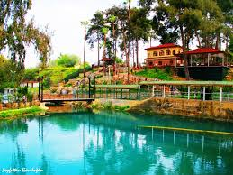

Tarsus İlçesi

Tarsus, Mersin'in en köklü tarihe sahip ilçelerinden biridir. Tarihi İpek Yolu'nun önemli merkezlerinden biri olarak bilinir.
Gezilecek Yerler
- Şahmeran Hamamı: Efsanelere konu olan bu tarihi hamam, Tarsus'un önemli simgelerindendir.
- Kleopatra Kapısı: Antik dönemde inşa edilen bu kapı, kentin simgelerinden biridir.
- Eshab-ı Kehf Mağarası: Yedi Uyurlar efsanesine konu olan bu mağara, ziyaretçilerin ilgisini çeker.
Yöresel Lezzetler
Tarsus'ta humus, cezerye ve kebap çeşitleri oldukça popülerdir. Ayrıca narenciye ürünleriyle de meşhurdur.
Ana Sayfaya Dön